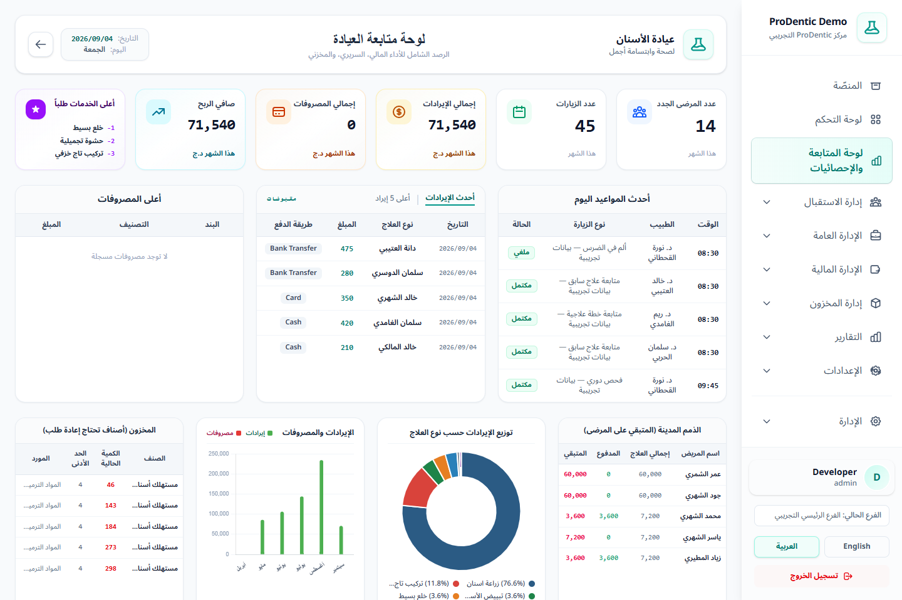

أحدث المواعيد اليوم
يعرض الوقت والطبيب ونوع الزيارة والحالة لآخر خمسة مواعيد، ويُستخدم لتقدير ضغط اليوم بسرعة.
شاشة تنفيذية تجمع أداء المركز المالي والسريري والمخزني وتساعد الإدارة على اكتشاف ما يحتاج متابعة سريعة.
analytics.view. إذا اختفى الرابط، اطلب من المدير مراجعة صلاحيات الدور.
| المؤشر | ماذا يعني؟ | الإجراء المقترح |
|---|---|---|
| المرضى الجدد | عدد ملفات المرضى المنشأة خلال الشهر الحالي. | قارن الرقم بالشهر السابق وبمصدر الإحالات أو الحملات. |
| عدد الزيارات | مواعيد الشهر الحالي، ومع حساب الطبيب تظهر مواعيده المرتبطة به. | راجع الجدول عند وجود فرق غير متوقع مع عدد الجلسات. |
| إجمالي الإيرادات | مجموع الدفعات المقبوضة خلال الشهر. | استخدم التقرير المالي للتفصيل حسب طريقة الدفع أو الطبيب. |
| إجمالي المصروفات | المصروفات المسجلة في الشهر. | افتح المصروفات حسب الفئة لمعرفة البنود الأعلى. |
| صافي الربح | الإيرادات المقبوضة ناقص المصروفات للفترة المعروضة. | راقب الاتجاه على الرسم لستة أشهر، ولا تعتمد على يوم واحد. |
| أعلى الخدمات طلبًا | الخدمات الأكثر تكرارًا في بنود الفواتير. | خطط للمخزون والكوادر المرتبطة بالخدمات الأعلى طلبًا. |
يعرض الوقت والطبيب ونوع الزيارة والحالة لآخر خمسة مواعيد، ويُستخدم لتقدير ضغط اليوم بسرعة.
يمكن التبديل بين آخر الدفعات وأعلى الدفعات مع إظهار التاريخ والمبلغ وطريقة الدفع.
يوضح أكبر البنود مع فئتها وقيمتها حتى يسهل اكتشاف المصروف غير المعتاد.
يعرض المرضى ذوي الفواتير غير المسددة أو المسددة جزئيًا، مع الإجمالي والمدفوع والمتبقي.
يظهر الصنف والكمية الحالية والحد الأدنى، ويشير إلى الأصناف التي تتطلب إعادة طلب.